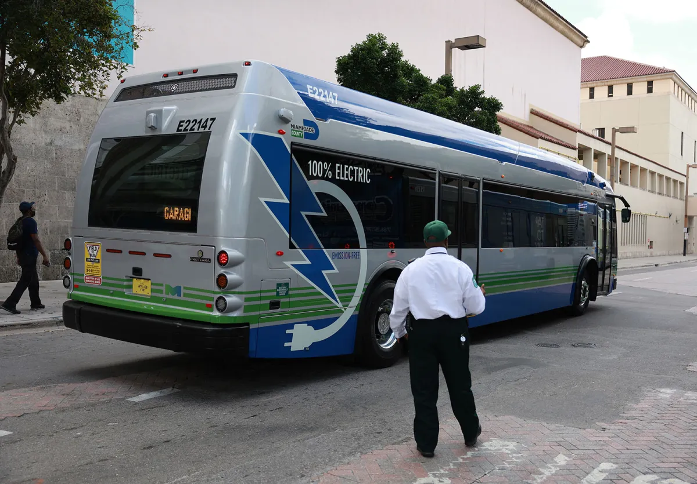
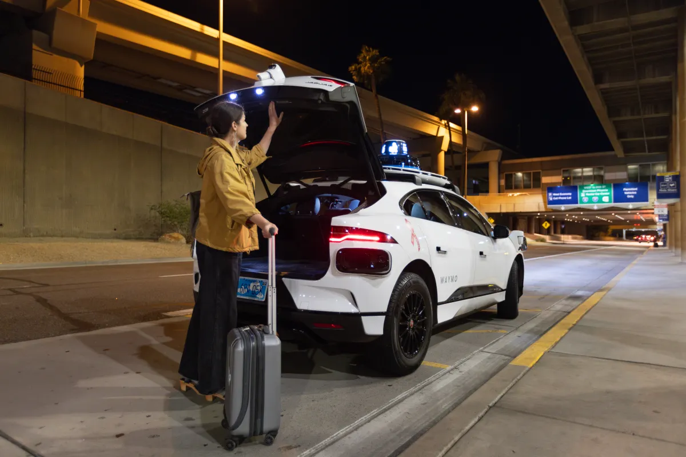

Transportation
The overlooked tech that kept cities moving in 2023
Rebecca Bellan
/ 8:10 PM GMT+1•December 29, 2023

Over here at TechCrunch, our time is often spent finding and reporting on
the next new new thing in mobility, from autonomous drones and electric
air taxis to self-driving trucks and even batteries made of paper. While
this tech, in theory, may someday help people and goods move from point A
to B, much of it is just that — theory. Hope. Promise. Showy demos to
impress VC investors.
That’s why we dug into the technology that’s helping cities move today.
Some of it is unsexy, but transportation is, more often than not, a
utility.
We’ll take a close look at the tech helping move two U.S. cities — Miami
and New York City — and run through a few other standout innovations in
2023.
How Miami uses on-demand transit

Miami has been working with transit tech company Via to bring in on-demand
transit since 2020. The service, formerly called GO Connect, launched
during the COVID-19 pandemic as a first- and last-mile solution, filling
in the gaps between where people live and major transit hubs. Three years
later, Miami-Dade rebranded the service to MetroConnect, adopted it into
its broader public transit network and added four new service zones.
Within a month of rebranding and expanding, MetroConnect completed 69%
more rides and saw a 70% increase in ridership, according to Via. The
company also said MetroConnect has, since its inception, increased access
to 57% more jobs within a 45-minute commute by connecting riders to
transit hubs, two-thirds of whom report that they do not have access to a
car.
Carlos Cruz-Casas, chief innovation officer at Miami’s department of
transportation and public works, told TechCrunch MetroConnect has helped
boost public transit ridership, which saw a drop during the COVID-19
pandemic.
“There’s no substitute for well-run fixed-route service,” said Cruz-Casas.
“We actually realized that the best marketing tool for getting people back
on transit is frequency.”
While the city expanded MetroConnect’s on-demand microtransit, it also
worked with one of Via’s planning products to optimize its bus network.
The city used Remix, the transit planning tech that was acquired by Via in
2021, to build its Better Bus Network plan. The plan, which went live in
November, involved realigning 99 bus routes to create a network of
high-frequency corridors.
“We went from five corridors that were frequent to more than 20 — for us
that means running every seven and a half minutes, 10 minutes, 15 minutes.
All day, everyday,” said Cruz-Casas. “Miami-Dade county is bigger than
some states, though. We can’t provide that frequency everywhere. That’s
where the on-demand transit comes in.”
Eventually, Via will add vehicles from May Mobility, a driverless
technology company, to its MetroConnect fleet in Miami. May Mobility and
Via recently announced a partnership to provide a rider-only on-demand
microtransit service in the retirement community of Sun City, Arizona.
May’s style has so far been to move carefully, so we don’t expect to see a
widespread Miami launch for some time.
Cruz-Casas also noted that Miami is working with Via on a full intermodal
trip planning solution between fixed-route and on-demand services. Miami’s
transportation department has been partnering with a company called
Swiftly to provide big data analytics and more accurate real-time
information for its GO app
“I am a big fan of the technologies that allow for real-time feedback
because you feel empowered to make decisions and it’s a lot more
comfortable to use public transit when you have accurate real-time
information,” said Cruz-Casas.
Bringing NYC’s subway system to the 21st century

New York City’s iconic subway system is more than 100 years old. Most of
the investment into the subway today is focused on modernization to help
the century-old system meet the needs and expectations of customers living
in an era of high technology.
Part of that has been reducing the friction to ride. Anyone who’s ridden
the NYC subway will know that frustrating, and bizarrely nostalgic,
feeling of rushing to make your train, swiping your MetroCard and
barreling forward through the turnstiles in one motion, only to be bodily
met with an unmoving metal bar because you didn’t swipe correctly or, even
worse, have INSUFFICIENT FARE.
The Metropolitan Transport Authority (MTA) is phasing out the MetroCard in
favor of the OMNY system, a contactless, open-loop payment system. Riders
can tap their credit and debit cards or their phones (if they have a
digital wallet) to quickly and easily pay the subway fare and move through
the turnstiles. For those who are unbanked and need to pay with cash, the
MTA is introducing an OMNY card, which can be accessed via vending
machines throughout the city.
“We’re up to over 50% of subway riders and a significant percentage of bus
riders using tap-and-go one way or another,” Jamie Torres-Springer,
president of MTA construction and development, told TechCrunch. “And it’s
actually even better. Seventy percent of the riders who are currently
eligible to use OMNY are using it.”
During the COVID-19 pandemic, the MTA’s ridership fell to about 5%. Today,
the service is at around 80% of pre-COVID ridership, according to
Torres-Springer.
“Very interestingly, as we’ve recovered ridership over the last year or
so, that entire recovery has been using OMNY, and MetroCard users have
been flat,” he said. “Which means that through the convenience, we are
attracting people back or attracting new riders to the system.”
The full phase-out of the MetroCard won’t happen until all MTA users can
easily access the OMNY payment platform.
Another quintessential NYC subway experience is riding to work when
suddenly the train stops in a tunnel. And it doesn’t move. The conductor’s
voice crackles over the loudspeaker and you think you hear something about
a signal malfunction. You check your phone and have no reception. There
will be no texting your boss to let them know you’ll be late. All you can
do is pray for movement.
The MTA is working on making experiences like that less common, and we’ll
get to that in a minute, but probably a nearer-term Band-Aid for such an
occasion is the agency’s plan to bring cell service to all subway stations
and tunnels. The city signed a deal in 2022 with Boldyn, formerly Transit
Wireless, to build out cell signal in all subway tunnels. Today, it’s in
stations citywide, which can carry you through to many of the tunnels as
long as they’re not of a significant length.
Having service in the tunnels will be helpful for trip planning, and the
city is working to ensure better real-time information through
communication-based train control (CBTC). CBTC uses telecommunications
between the train and track equipment to manage traffic. “Now you always
know exactly where the trains are, and you can run them closer together
and faster,” said Torres-Springer, noting that the 7 line saw on-time
performance improve from 68% to 91%, and speeds increase from 8% to 14%,
after implementation of the technology.
CBTC isn’t exactly new technology. It was initially adopted close to 30
years ago, but the MTA is ramping up installations. The agency is
investing $6.7 billion out of a total $55 billion five-year program into
CBTC improvements, and currently has five lines under construction, with
plans to do another two “substantial, long lines.” The MTA works with
telecommunications providers Siemens, Thales and Hitachi to make the
signals work.
The city’s operating agencies are also working to implement predictive
maintenance for NYC’s subways, but Torres-Springer says that’s challenging
because there are more than 6 million separate assets within the system.
“We’ve been around for 100 years. A lot of the information about the
assets is tucked into somebody’s notebook in a shop somewhere,” he said.
“First we got to get the inventory. Once we do that, we can really work
with predictive maintenance analytics tools.”
Honorable mentions

A number of other companies, some of them working on frontier tech, also
helped people and packages move from point A to point B in 2023. Here are
some of the ones worth highlighting.
Alphabet-owned autonomous vehicle company Waymo has made considerable
headway this year, notably in Phoenix. Waymo doubled its Waymo One service
area in May, connecting downtown Phoenix with East Valley and adding
Scottsdale. Waymo’s service area around the Phoenix area is now more than
225 square miles. And after initially launching autonomous airport rides
for members of the public in December 2022, Waymo this month launched
curbside pickup at the airport. In October, Waymo also teamed up with Uber
to launch its Waymo Driver in the ride-hailing app in Phoenix.
Zooming out of the U.S., Israeli traffic management startup NoTraffic
worked with Nvidia and Rogers Communications to set up a 5G-connected
AI-enabled traffic management solution at the University of British
Columbia in 2023. NoTraffic, which raised $50 million earlier this year,
offers hardware and software that turns intersections into smart
intersections that can conduct traffic flows based on real-time data.
UBC provided the perfect city microcosm to test out the effect of this
combined technical solution to traffic flows. The city campus not only
sees thousands of commuters everyday, but also plenty of pedestrians and
cyclists. NoTraffic says over the course of a year, wait times decreased
by a total of a thousand days for both cars and pedestrians. Carbon
emissions were estimated to have been cut by several tons, with economic
benefits exceeding $100,000.
Meanwhile in the Netherlands, another Israeli startup — Moovit, a
trip-planning app — has partnered with Arriva, which operates train and
bus services in the country. Together, they launched glimble, a
Moovit-powered white label app that helps users plan, pay and ride with
any public transport operator, shared transit or micromobility provider
throughout the entire country.
Through glimble, Moovit pulls together official information from all Dutch
transport agencies and crowdsourced information to calculate the best
route for each journey, with options for bus, rail, tram, underground,
ferry, taxi, Uber, car sharing, scooters and bikes. The app is also
available in 45 languages, which helps tourists and immigrants use it,
too.
Around London, a startup called Route Reports is helping keep trains
running on time and safely by mapping the tracks. In autumn and winter,
leaves and ice on railways make the tracks slippery, so drivers proceed
with caution. That ends up causing delays and service cancellations, so
during those colder months, Transport for London ends up offering
less-frequent service, says Connell McLaughlin, CEO of Route Reports. In
the worst case, trains encountering unexpected conditions fail to stop,
and collide.
Network Rail, the infrastructure manager of most of Great Britain’s rail
network, enlisted Route Reports to map slippery spots in real-time around
London, using data transmitted from passenger trains. Route Reports has
also fitted sensors to Network Rail’s special fleet of trains that use
high-pressure water jets to clean off leaf residue so the treatment can
also be tracked. McLaughlin says these interventions have reduced adhesion
reporting times from four hours to seconds.
We’re looking forward to another year of technological progress in
mobility! May your 2024 be filled with on-time trains and buses, access to
first- and last-mile transport, dynamic traffic lights and more swift,
safe movement.